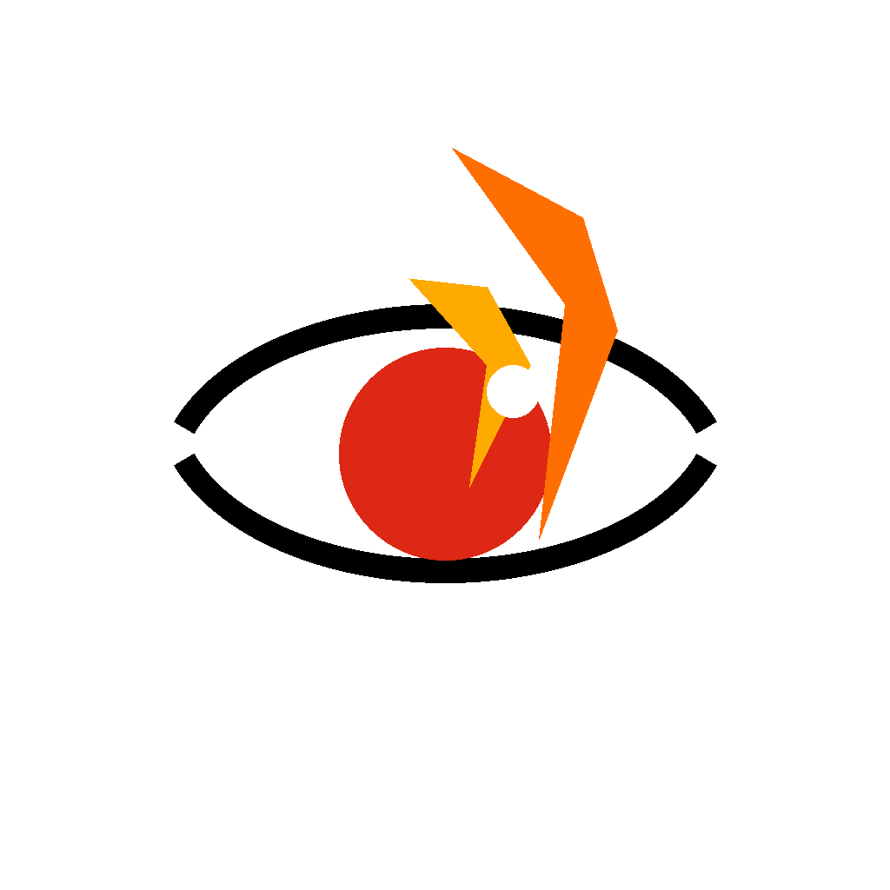

EmberSightAgentic incident intelligence for wildfire IMTs
Humans decide. EmberSight informs.
A hierarchical team of AI agents reads the fire, the weather, the terrain, and the people in its path — so Incident Commanders can decide faster, with the full picture in front of them.
The problem
IMTs aren't data-starved. They're time-starved.
Wildfire conditions change in minutes. Weather, fuel, terrain, structures, evacuation zones, crew positions — the data exists, fragmented across agencies and feeds. EmberSight runs a coordinated agent team that fuses it continuously and surfaces the few decisions that matter right now.
The agent team
Seven specialists. One commander.
Each agent owns a single dimension of the incident. A Master Incident Commander agent fuses their findings into one explainable brief — every recommendation flagged for human approval.
- 01Weather & Wind
Gusts, humidity, Red Flag thresholds, forecast shifts.
- 02Terrain & Fuel
Slope, aspect, fuel continuity, barriers, access.
- 03Spread Simulation
Probabilistic 30 / 60 / 120-minute spread cones with trigger points.
- 04Values at Risk
Structures, critical infrastructure, vulnerable facilities in the cone.
- 05Routing & Staging
Ingress, egress, water, and the roads to avoid.
- 06Resource Rec.
Suggested response packages — never dispatches on its own.
- 07Evacuation Intel
Watch zones, bottlenecks, vulnerable populations, warning language.
The principle
Built for the wildland-urban interface, where decisions save lives.
EmberSight augments the IMT — it does not replace it. Every action is a recommendation, every recommendation is explainable, every override is logged.
Open dashboard